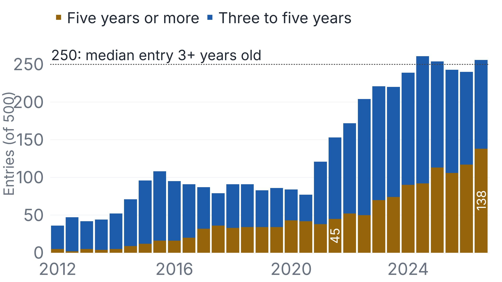
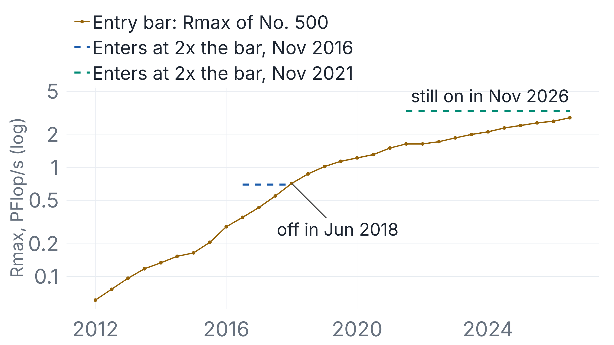
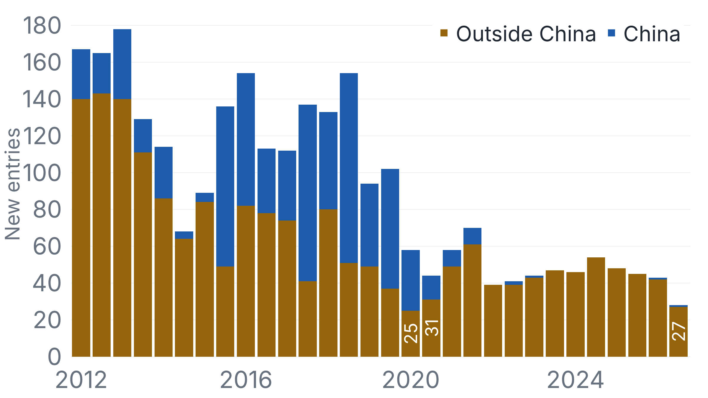

A slow entry bar keeps old supercomputers on the TOP500
The HPL score needed to reach No. 500 has risen 5–25% a year since 2020, against 30–69% in 2011–2019, so more than half the machines that entered in 2020 and 2021 were still listed five years later.
Machines now stay listed for years
Half the entries on the November 2026 TOP500 first appeared on the list three or more years earlier, and 138 of the 500 first appeared five or more years earlier. In every November list from 2012 to 2019, the median entry was six months to a year old.1
The cause visible in the files is the entry bar, the HPL result of the system at No. 500. It rose 30–69% a year from 2011 to 2019 and 5–25% a year since 2020, and a bar that rises slowly leaves old machines above it. Counts are from TOP500’s list files as of 20 November 2026.1
How old the list is, counted by First Appearance
Each file since June 2012 carries a First Appearance column holding the edition on which an entry was first listed. TOP500 publishes no definition of the field. Its field descriptions define only Year, as “Year of installation/last major update”.2 In the files, First Appearance survives upgrades and re-entry, and resets only under a new System ID. Age here is the current edition minus First Appearance, in six-month editions. The Year field, which upgrades do reset, gives nearly the same tail: 139 entries five or more years old in November 2026, against 138.1

The brown band is the five-year tail. It stays under 40 entries through 2019, and November 2021, with 45, was already the oldest list to that date. The median reached six editions in November 2024 and has read five or six since, but the five-year tail kept growing: 92, 113, 106, 117 and then 138. Of the 138, 71 entered in June or November 2021 and crossed the five-year line this year.1
The old machines are small. The 138 have a median rank of 313 and hold 9.0% of total Rmax, and the highest placed is Fugaku at No. 9. Entries first listed within the last two years still hold 61.5% of total Rmax, a little under the 62.0–69.4% of every November list from 2016 to 2025. Most of the old machines sit in the bottom half.1
A slower entry bar lets machines stay
The list always holds 500 entries, so each newcomer pushes one entry off the bottom. A machine’s Rmax rarely changes once it is listed, so it leaves when the bar rises past it. A machine that enters at m times the bar, with the bar growing g a year, stays about ln m / ln(1 + g) years.1
A machine that enters at twice the bar lasts 1.5 years at 60% a year, the pace of 2016 to 2018, and 6.4 years at 11.4%, the pace of the last two November lists. Figure 2 draws both cases on the real bar.

On a log scale a steady growth rate is a straight line, and this one bends after 2019. Of each cohort of machines outside China that entered between June 2012 and November 2017, 3–17% were still listed five years later. Of the 2020 and 2021 cohorts, 52–72% were. Counting Chinese entries too, 126 of the 230 machines that entered in 2020 and 2021 were still listed five years later.1
Total Rmax grew 25–67% a year from 2020 to 2026 while the bar rose 5–25%, so the growth went to entries far above No. 500. The files do not say why the bar slowed.1
Newcomers outside China held flat until November
TOP500’s release led with newcomers: “Just 27 systems are new, the lowest number ever recorded by a wide margin.”3 The downloaded file holds 28, as does the live list, which includes TACC’s Horizon at No. 24.4 The counts here use the file. Either is the lowest since the column began in 2012. The previous low was 39, in June 2022.

The blue segments are Chinese entries: 33 to 103 newcomers a list from November 2015 to June 2020, and 0 to 2 a list since June 2022, as China’s entries fell from 228 in November 2019 to 18. Much of the drop from the 2010s is that withdrawal. Outside China, November 2026’s 27 newcomers sit beside the 25 and 31 of 2020.1
Timothy Prickett Morgan of The Next Platform reads the dip as timing, with Nvidia’s Rubin and AMD’s MI400 parts due in 2027. He writes that “the stall is more about roadmap timing” than a move to the cloud, and expects “about two dozen extra machines” over the next lists to make up the drop.5 A machine installed after 1 November could not be on this list at all.6 Before 2022 the dips did rebound: November 2014’s 68 was followed by 89, 136 and 154, and November 2020’s 44 by 58 and 70. Since June 2022, newcomers held between 39 and 54 for nine lists before this one.1
The release offers another reason: “This suggests that growth has indeed shifted toward AI factories, and from capability systems to capacity systems.”3 It rests that on Epoch AI estimates, whose 2.5-times-a-year growth counts quarterly additions of AI chips in H100-equivalents of 8-bit peak capacity.78 HPL Rmax is measured 64-bit throughput, so the two rates cannot be compared. A list of submitted machines cannot show where unsubmitted hardware went.
June 2027 will test the timing reading. If it is right, newcomers return to the 2022–2026 range. The list aged through those years. The bar rose 5–17% a year, a pace at which a machine entering at twice the bar stays more than four years.1
Sources
- TOP500 · List file, November 2026 (TOP500_202611.xlsx), with the files for every list since June 1993 at the same path
- TOP500 · TOP500 Description
- TOP500 · TOP500 Leadership Holds Steady as New System Turnover Falls to Historic Low (16 November 2026)
- TOP500 · November 2026 list
- The Next Platform · Timothy Prickett Morgan, Supercomputer Installs Take A Dive In The Second Half Of 2026
- TOP500 · Call for Participation
- Epoch AI · Isabel Juniewicz and Josh You, New global AI computing capacity is doubling every 9 months (29 October 2026)
- Epoch AI · Introducing the AI Chip Sales data explorer (update of 13 January 2026)